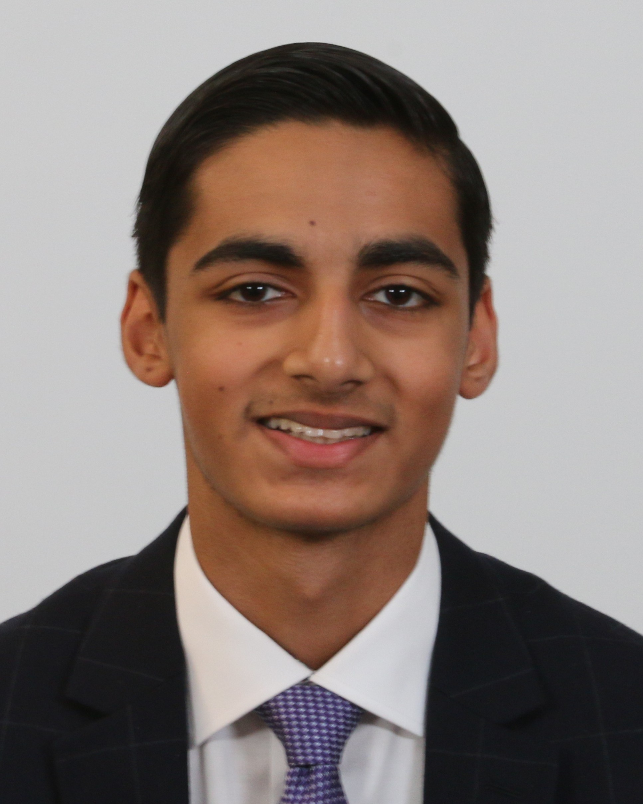
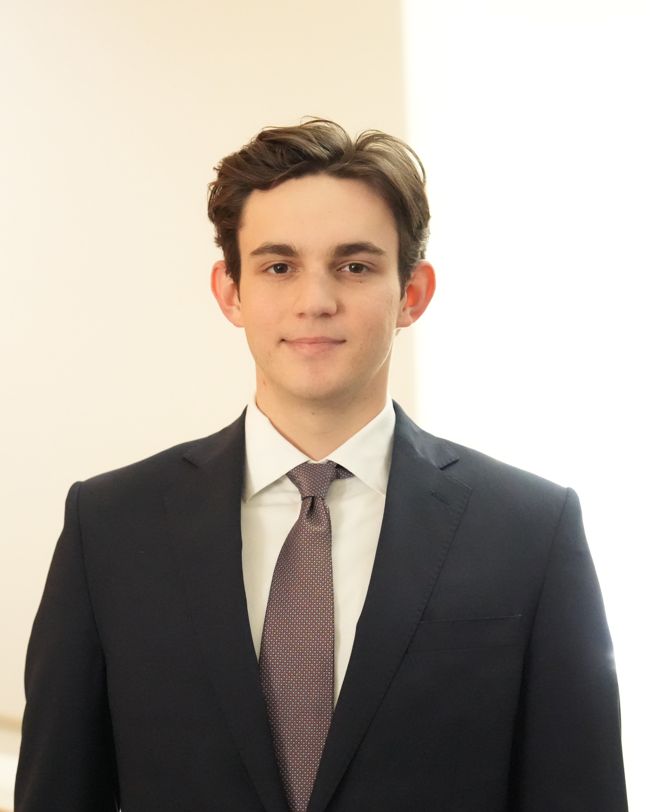
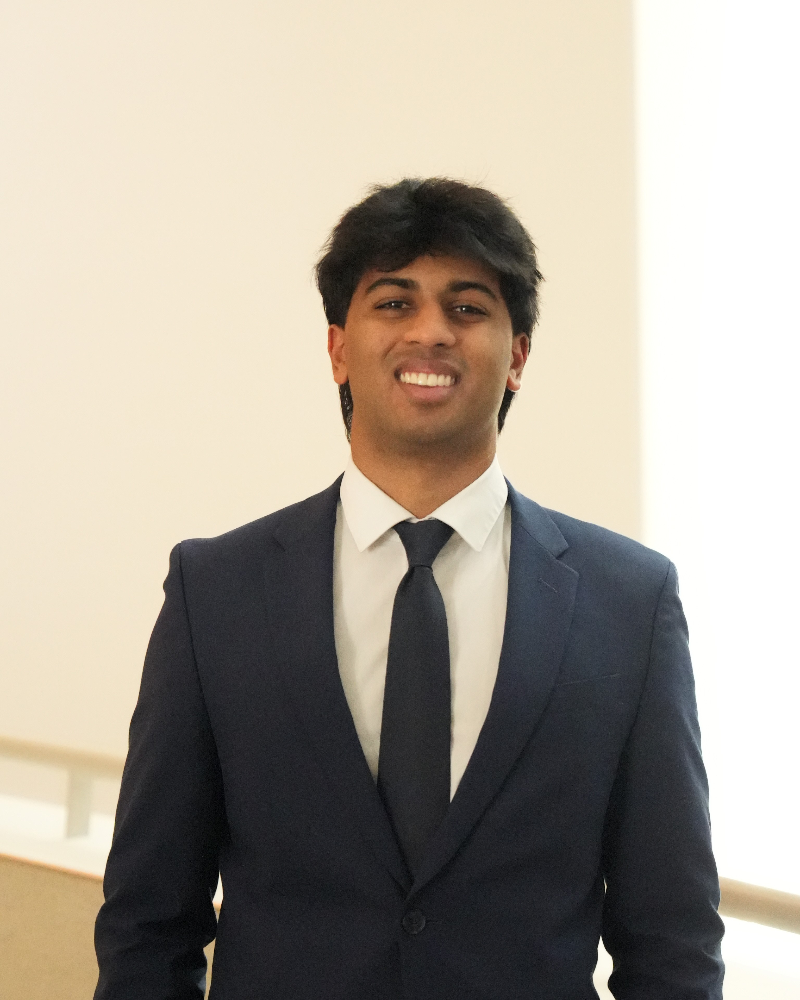
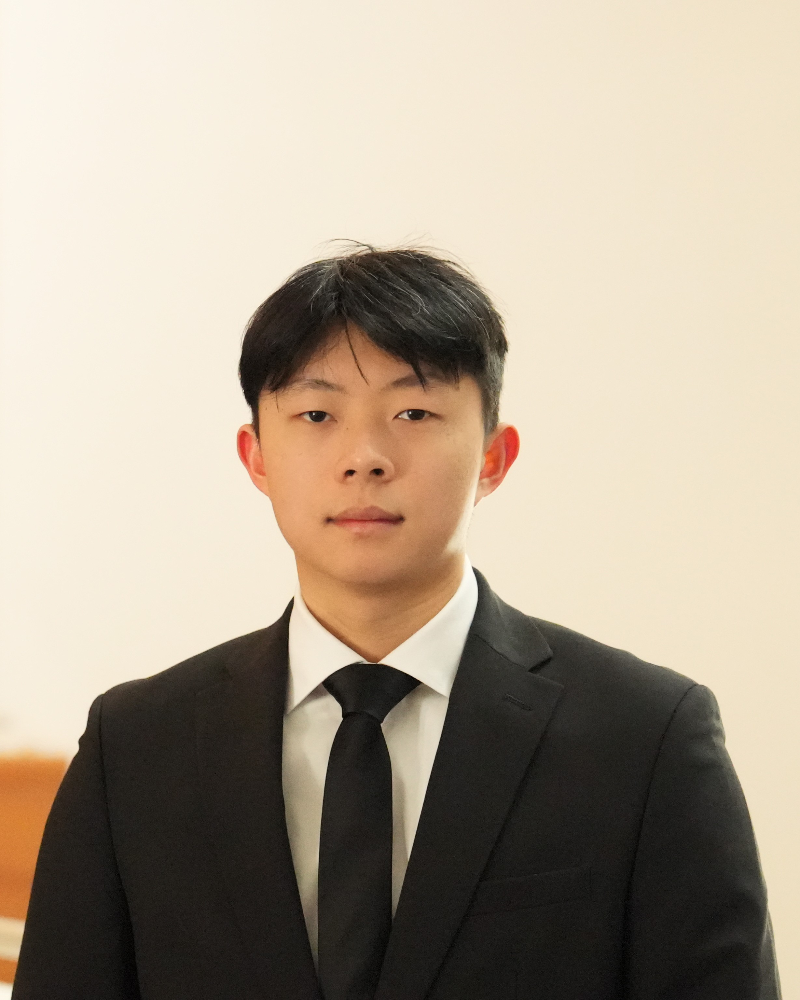
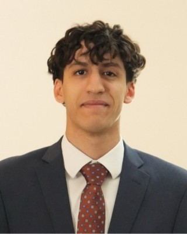
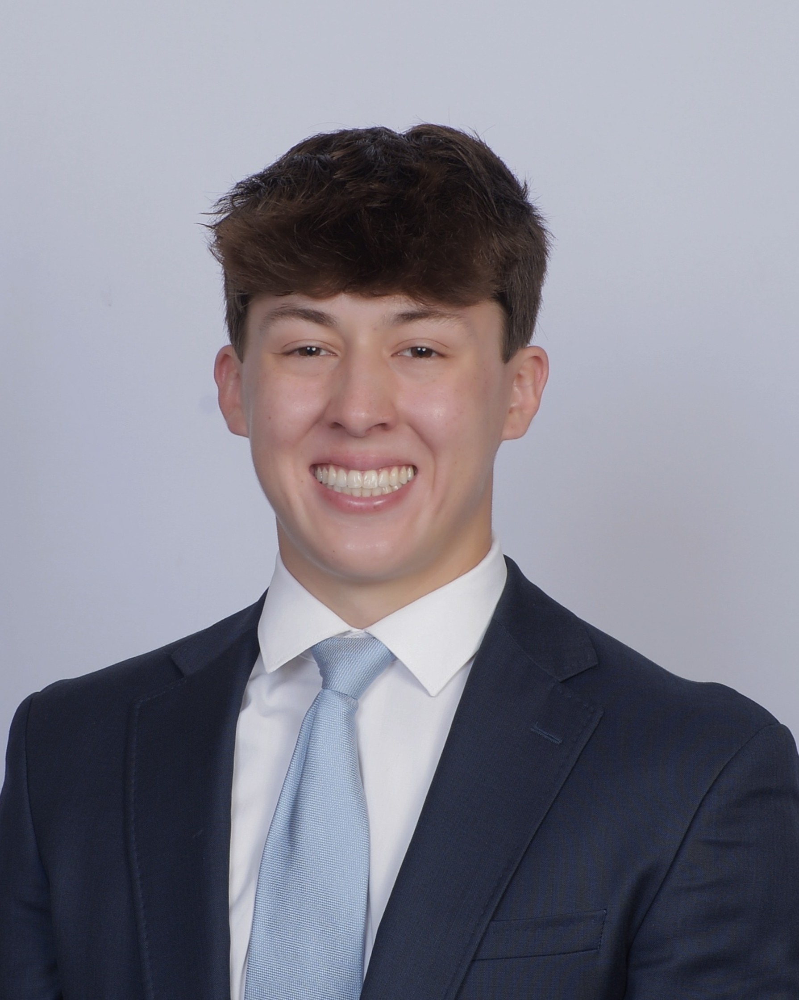
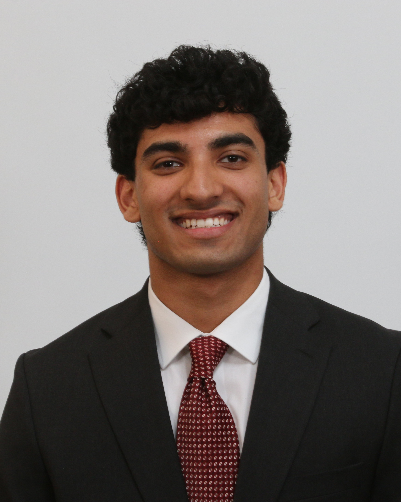

Vertical Heads
Meet the leaders guiding research and investment strategy across our six core verticals.

Hammad Safi
Consumer Vertical Head
Hammad Safi is a Sophomore majoring in Neuroscience with a minor in Finance. He has prior experience in clinical research and marketing, while actively exploring the intersection of biology and financial markets. Hammad is focused on applying his interdisciplinary background to future opportunities in healthcare finance.

Aiden Owens
Industrials Vertical Head
Aiden Owens is a student majoring in Accounting and Finance. He has prior experience as an Analyst for The Weatherhead Fund and is a member of the varsity swimming and diving team. Aiden is focused on building a strong foundation in financial reporting and investment management.

Jaan Desai
Healthcare Vertical Head
Jaan Desai is a Sophomore majoring in Finance. He has prior experience as a Financial Analyst Intern at AfterQuery Experts. Jaan is committed to developing his skills in financial modeling and analysis for a career in the finance industry.

Shilpi Bardhan
FinTech Vertical Head
Shilpi Bardhan is a Sophomore majoring in Mathematics and Finance. She has prior experience as a Public Finance Intern at Baird and has been recognized as a Coca-Cola Scholar. Shilpi is actively involved in the finance community and aims to pursue a career as a Quantitative Analyst.

Ian Huang
FI & REITs Vertical Head
Ian Huang is a student focusing on Finance and Economics. He has prior experience as an Investment Banking Summer Analyst at martinwolf M&A Advisors. Ian is dedicated to advancing his expertise in mergers and acquisitions and corporate finance.

Ahmed Agag
FI & REITs Vertical Head
Ahmed Agag is a dedicated student at Case Western Reserve University majoring in Finance. With a keen interest in Financial Institutions and Real Estate Investment Trusts, Ahmed is focused on developing robust valuation models and strategic insights for the Fund's portfolio.

Mark Takasaki
TMT Vertical Head
Mark Takasaki is a Sophomore pursuing a double major in Finance and Accounting. He has prior experience as an Analyst for The Weatherhead Fund and is a varsity baseball student-athlete. Mark is currently pursuing an Integrated Master of Finance.

Zaid Rahman
TMT Vertical Head
Zaid Rahman is a Sophomore majoring in Quantitative Economics and Mathematics. He recently served as a Venture Capital Intern at Fabric VC. Zaid is focused on leveraging his quantitative background for future roles in venture capital and finance.